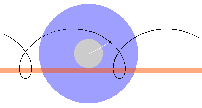
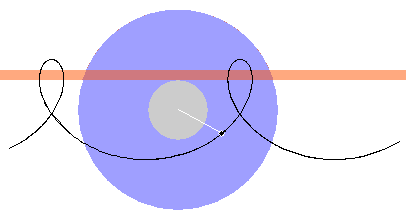
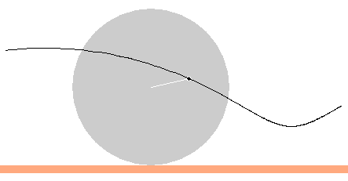
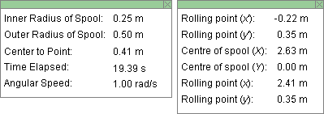
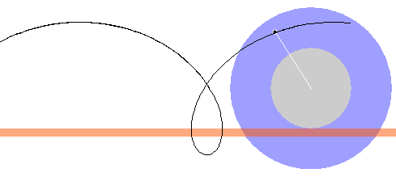
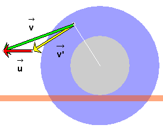

Instructions
This page is designed to get you started using the applet. The applet should be open. The step-by-step instructions on this page are to be done in the applet. You may need to toggle back and forth between instructions and applet if your screen space is limited.
To be able to visualize the motion shown by the applet, imagine a spool made of an inner cylinder (grey) rigidly connecting two outer disks (blue). The spool moves so that its inner cylinder is rolling without slipping on a horizontal surface (salmon-colored). A point (black) drawn on the outer disk facing you is revolving with the disk.
Exercise 1.
RESET  the applet. Make sure the spool support is set to "Bottom".
the applet. Make sure the spool support is set to "Bottom".
Set the three sliders as follows:
The outer radius of the spool, R, is fixed at 0.50 m.
Select the Trace toggle button  , and PLAY
, and PLAY  the motion.
the motion.
After the spool has moved some distance, click the REVERSE
button , then PLAY again, and then PAUSE  . You should be able to
construct a looped path as in Figure 1 below.
. You should be able to
construct a looped path as in Figure 1 below.

Figure 1
Exercise 2. REWIND  the applet. Set the angular
speed to 2.00 rad/s. Then PLAY or REVERSE the motion. You
should be able to observe that the revolving point traces out
the same path as before, but that the motion is twice as
fast.
the applet. Set the angular
speed to 2.00 rad/s. Then PLAY or REVERSE the motion. You
should be able to observe that the revolving point traces out
the same path as before, but that the motion is twice as
fast.
Exercise 3. RESET the applet, and select "Top" as the the spool support. Restore all other settings to those used in Exercise 1:
PLAY or REVERSE the motion with the path displayed. The new path is a mirror image of the previous path, the previous path being reflected in a horizontal mirror plane. The new path is illustrated in Figure 2 below.

Figure 2
Exercise 4.
RESET the applet, and select "Bottom" for the spool support.
Set the three sliders as follows:
PLAY and REVERSE the motion with the path displayed. You should be able to construct a wavy instead of a looping path, as illustrated in Figure 3 below.

Figure 3

Exercise 1. RESET the applet, and make sure the spool support is set to "Bottom".
Display the two data boxes by selecting the Data button
 .
.

Figure 4
Duplicate the constants (not the time elapsed) displayed in the data box on the left in Figure 4 by setting the three sliders as follows:
Exercise 2. PLAY or REVERSE the motion. Try to duplicate (approximately) the coordinate values in the data box on the right in Figure 4. The point on the spool would be oriented as in Figure 5 below. All coordinates in the data box on the right are represented in the applet window at a scale of 2 pix = 1 cm.

Figure 5
The x, x', and X values increase going to the right and the y, y', and Y values going upward.
Working with the values in the data box on the right in Figure 4 or with those displayed by your applet, verify that the three sets of coordinates satisfy the following addition rules:
x = x' + X  (1a)
(1a)
y = y' + Y  (1b)
(1b)
E.g., using the data from Figure 4, Equation (1a) amounts to
2.41 m = -0.22 m + 2.63 m  (2)
(2)
which adds up correctly.
Exercise 1. Continuing from the previous section,
display the vector panel by selecting the Vectors button
 .
.

Figure 6
On the vector panel, as illustrated in Figure 6 above,
select all three velocity vectors, velocity  of revolving point relative
to lab frame, velocity ' of revolving point relative to spool frame,
and velocity
of revolving point relative
to lab frame, velocity ' of revolving point relative to spool frame,
and velocity  of spool frame relative to lab frame.
of spool frame relative to lab frame.
Then drag so
that its tail-end coincides with the tip of '. This positions the three
vectors so that one can see that the Galilean velocity
addition theorem,
=
' +
,
 (3)
(3)
is satisfied. Figure 7 below illustrates how the three velocities combine when the spool is at the same point as in Figure 5.

Figure 7